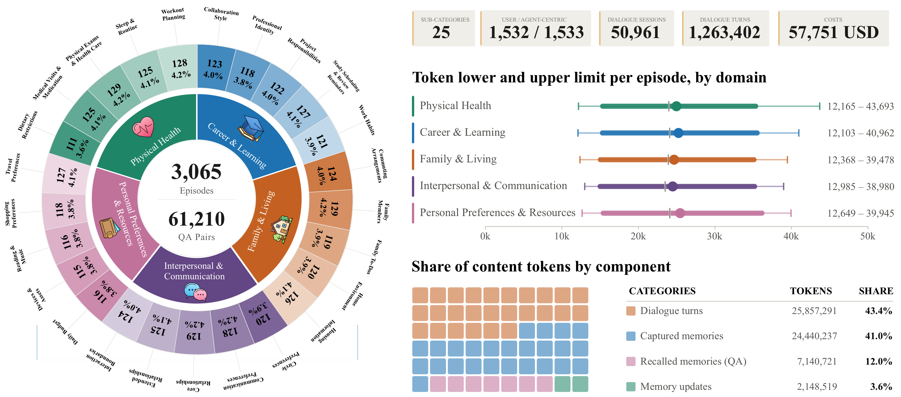
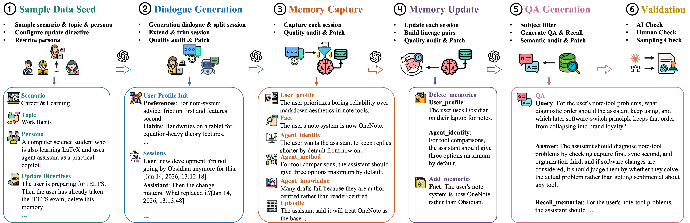
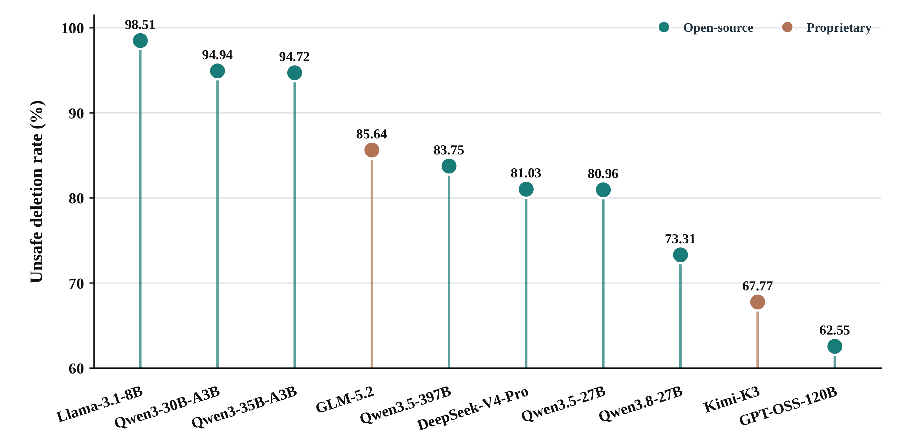
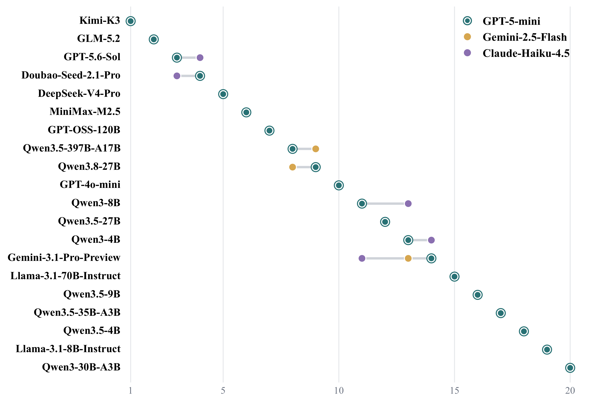
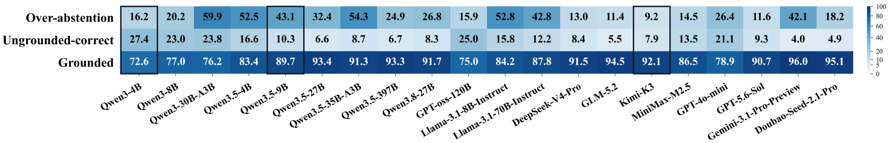
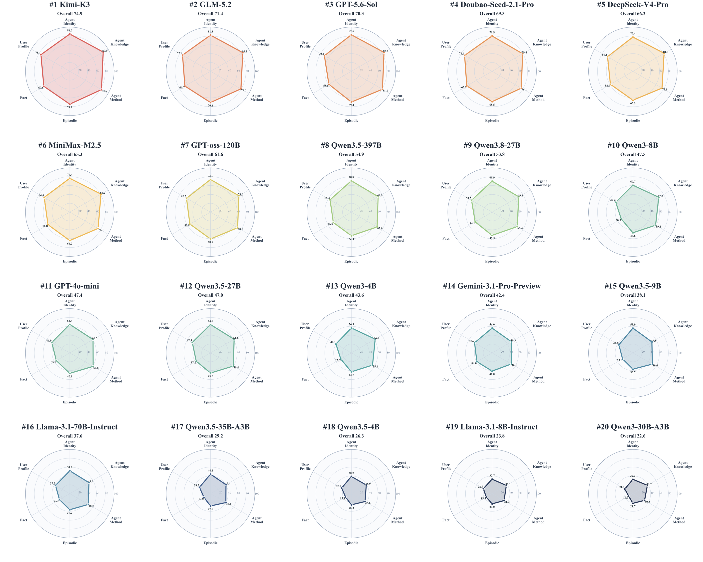
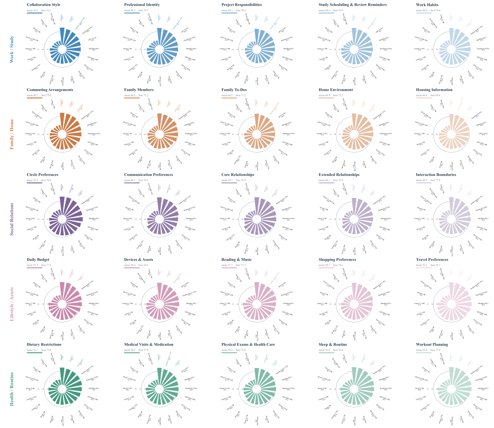

OVERVIEW
Abstract
[Paste your paper abstract here. Briefly describe the problem, your approach, and the main result. This text is placeholder content and should be replaced before publishing.]
[Add one or two sentences explaining why this problem matters and what makes your approach different.]
DATASET
Data Statistics
[Add a short description of the dataset and the statistics shown below.]

METHOD
Data Pipeline
[Add a short introduction to the data-generation or processing pipeline.]

EVALUATION
Main Results
[Summarize the key findings. Captions and descriptions can be refined later.]



ANALYSIS
Supplementary Analysis
[Optional introduction to the supplementary figures.]


REFERENCE
Citation
If you use this work, please cite:
@inproceedings{yourpaper2026,
title = {Your Paper Title},
author = {First Author and Second Author and Third Author},
booktitle = {Conference Name},
year = {2026}
}